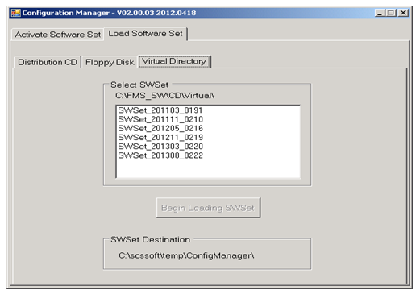

Loading and Activating a Software Set on a Forming Machine Server
Purpose
- This document describes how to load and activate a software set on the forming machine server. It supersedes the instructions given in the OSI Reference Manual (CS2-0275-GR01), Appendix B.2.2, and the IDS Electrical Service and Reference Manual (IDS-050-GR01), Appendix A.2.2.
- If updating from a SWSet prior to 223, there are two extra steps that must be completed prior to resuming normal operations. First, be aware that the running settings from the OSI/EICOM and COM-SOC 3 systems will be rejected after the installation. Instead, the job must be reloaded from MOC. Second, the backup scheme was greatly changed with SWSet 223. Therefore, the backup server must be reconfigured after the installation.
Application
This work instruction applies to all Space Plants that have FSC and Space IS Machines.
Procedure
- In order to install the application software, you must first log off by navigating to: Start, andgt;Log off (account name)…. A Windows message will prompt “Are you sure you want to log off?” Click on Log Off .
- Then, log into the setup account with the User Name: obsetup and the Password: SetupServer. Click OK to log in.
- There are two directories on the SWSet CD or distribution package. The ConfigMgr directory contains the latest version of the Configuration Manager software used to install and activate a SWSet. This must be installed first by double-clicking on the only file in the ConfigMgr directory, which is ConfigMangerSetup.msi.
- Windows Server 2003: If there is already a version of Configuration Manager installed, the system may ask if the installation should be repaired or removed. Select the Remove option, then restart ConfigManagerSetup.msi.
- Windows Server 2008: If there is already a version of Configuration Manager installed, the system may not permit installation. Instead, the old version will first have to be removed using the “Programs and Features” icon in the Windows Control Panel.
- Run the Configuration Manager program by navigating to: Start, andgt; Machine Server
Applications, andgt; Configuration Manager from the Start menu. A black DOS
command window will be displayed where you will either be prompted for the RD Account
Password (which is RandD), or the Administrator Account Password (which is
scsgolden (see Figure 1).
Figure 1. Figure 1: Configuration Manager Password Prompt 
- After entering the appropriate password, press the Enter key. The Configuration Manager window will then be displayed.
- There are three methods for installing a new software set on the server displayed on the Configuration Manager window:
-
Distribution CD: This tab is used with a physical CD, SCS-0237 (order the CD, or see SOP-08-001-C to create one). If using this method, insert the CD now.
Note:
If you encounter any issues when attempting to use this method, use method c, below.
- Floppy Disk: Although this tab is displayed, new software sets are no longer distributed on floppy disks.
-
Virtual Directory: This tab is used for loading a software set directly
from the server’s hard drive (for instance, where a USB thumb drive is used to
transfer the software to the machine server). If using this method, the
software set must now be copied to the server’s hard disk (into the
C:\FMS_SW\CD\Virtual directory) as shown in Figure 2. Note:
This is the preferred method for installing new software.
Figure 2. Figure 2: Virtual Directory Location 
-
Distribution CD: This tab is used with a physical CD, SCS-0237 (order the CD, or see SOP-08-001-C to create one). If using this method, insert the CD now.
- Click the Load Software tab, and then click the tab that
corresponds to the distribution method selected in Step 5. The name of the application software will
be displayed. Click on the application software name once so
it is highlighted, and then click on the Begin Loading SWSet
button (see Figure 3) to start the loading
process.
Figure 3. Figure 3: Load Software Set Tab 
- Several windows will display a listing of the files to be copied, along with a ‘Configuration Manager Information’ window that subsequently displays the files being copied. This process will take several minutes. When it is finished, clicking on OK will close the window and redisplay the Configuration Manager window.
- Click on the ‘Activate Software Set’ tab, and then click on the
name of the software set that was just loaded. Be sure to select the ‘Force
Activation of All Components’ option, and then click on the Make
Active button (see Figure 4).
Figure 4. Figure 4: Activate Software Tab 
- The Configuration Manager Information window will be displayed, along with several ‘Activating SWSet’ windows. Click on Yes for each window displayed. Several more windows will be displayed showing the files being copied, along with several messages on the Configuration Manager Information screen. This entire process will take several minutes.
- When the program is finished, a window will be displayed with a
message that the new software set is now complete and the Machine Server must be
rebooted (see Figure 5). Click
OK to finish the activation process. The Machine Server
will reboot. Note:
There are several errors that may occur during the activation process. Not all of these errors will result in a failure to activate. If the SWSet activation fails, repeat it again without restarting the Configuration Manager. If activation fails a second time, reboot the server and try again.
Figure 5. Figure 5: Activation Complete 
- Verify that the new software is active by navigating to: Start, andgt;Log off Obop… from the Start menu.
- A prompt will be displayed asking “Are you sure you want to log off?” Click on the Log Off button.
- Log back into the setup account with the User Name obsetup and the Password SetupServer. Click OK to log in.
- Run the Configuration Manager program by navigating to: Start, andgt; Machine Server Applications, andgt; Configuration Manager from the Start menu.
- Click on the ‘Activate Software Set’ tab.
- In the ‘Currently Active SWSet’ section, you should see the software set that you just activated. Click on the X in the upper right corner of the ‘Configuration Manager’ window to close it.
- If the prior SWSet was 222 or earlier, it will be necessary to reconfigure the backups. Launch the Backup Configuration utility, verify the backup server is correct and click the apply button. Consult document FES-03-118 Configuring Machine Server Backups if necessary.
- Launch the SCSSetup Wizard and verify that the configuration is correct. Be sure to click the finish button on the last screen. This will trigger another reboot of the Machine Server.
- Once the Machine Server reboot is complete, any OSI/EICOM, COM-SOC 3, or IDS cabinets which communicate with the server must also be rebooted.
-
Note:
Failure to reboot any of these components will cause them to continue to operate with the old software, which could lead to unexpected results.
-
Note:
Prior to rebooting the IDS cabinet(s), follow SOP-11-001-A to reimage the IDS Compact Flash cards. Reimaging the IDS Compact Flash cards eliminates the risk of a corrupted card and increased machine downtime.
-
Note:
If the prior software set was 222 or earlier, it will be necessary to reload the job from MOC. The saved data from the OSI/EICOM or COM-SOC 3 that is stored on the Machine Server was changed in structure and will not be compatible with the new OSI/EICOM and COM-SOC 3 programs.
-
- Once the Machine is operational with stable production, follow SOP-16-010 (Manual MDMS Backup) to manually force a machine server backup.
- Verify the backups are operational using document FES-03-117 Verifying Machine Server Backups.
Equipment
2 Network Cables and a Network Switch.
SCS-0237 Application Software DVD (SWSet) from SOP-08-001-C
References
- SOP-08-001-C Creating Forming Electronics Software.
- SOP-11-001-A IDS Reimage.
- FES-03-117 Verifying Machine Server Backups.
- FES-03-118 Configuring Machine Server Backups.
- FES-03-119 Manually Triggering a Machine Server Backup
Document Classification
- Asset Protection and Stability
- Organization and Training
Collaboration
|
Country Group |
Role |
Name |
|
Americas North |
Forming Electronics Specialist |
Dan Knuckles |
|
Europe |
Forming Electronics Leader |
Remko Beckers |
|
Central Europe |
Regional Leader Forming Electronics |
Ruud Bormans |
|
France - Spain |
Jean-Pierre Locato |
Jean-Pierre Locato |
|
Latin America |
IS Machine Leader |
Miguel Morales |
|
Engineering - Forming |
Associate Engineer |
Jose Gonzalez |
|
Global |
Global Forming Electronics Leader |
Franklin Barrios |
Revision History
| 2013-12-16 |
Originally Released as Process Control SOP-06-007-A |
| 2016-04-12 |
Revised and Released as Process Control SOP-06-007-B Updated Reference Documents Updated Required Items Updated Step 5 Added Step 11 |
| 2016-12-01 |
Revised and Released as Process Control SOP-06-007-C Updated SOP References to show latest revision levels Added instructions to first install the Configuration Manager included with the SWSet Removed error message writing scripts since the issue has been addressed Added SWSet 223 specific instructions Added instructions to re-run SCSSetup after activation Added instructions to manually force a backup and verify that the backup completed properly Added references to IDS reimage |
| 2022-06-29 |
Approved by Franklin Barrios, Global Leader FES Network Moved to GMF Site as FES-03-115 |